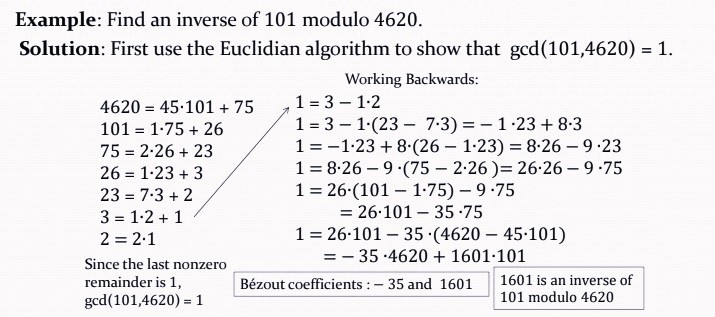
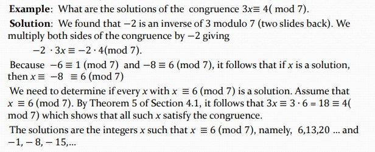
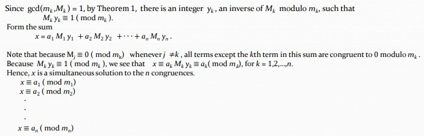

Ⅳ Number Theory
4.1 Divisibility and Modular Arithmetic
Division（整除）
$a|b$，$a$ 整除 $b$，$a$ 是 divisor/factor.
如果 $a$ 是整数，$d$ 是正整数，那么存在唯一整数 $q$，$r$，$0\leqslant d$，使得 $a=qd+r$.
- $d$: divisor 除数
- $a$: dividend 被除数
- $q$: quotient 商
- $r$: remainder 余数
Congruence（同余）
若 $m$ 整除 $a-b$，则 $a$ 和 $b$ 模 $m$ 同余.
同余式左右同除同一个整数不一定仍成立.
记 $Z_m=\{0,1,2,···,m-1\}$
模 $m$ 加法 $+_m$：$a+_mb=(a+b)\mod m$
模 $m$ 乘法 $·_m$：$a·_mb=(a·b)\mod m$
4.2 Integer Representations and Algorithms
计算 $b^n\mod m$
方法：将 $n$ 拆成 $a_{k-1}2^{k-1}+···+a_12^1+a_0$，$a$ 为0/1，因此 $b^n$ 可以拆成 $b^1,b^2,b^4,···,b^{2^{k-1}}$的乘积，$a=0$ 则没有这一项
然后依次计算 $b\mod m$，$b^2\mod m$，$b^4\mod m$，···，$b^{2^{k-1}}\mod m$，这一部分可以递推地计算，然后再把 $a=1$ 的部分的余数相乘再 $\mod m$
复杂度：$O((\log m)^2\log n)$
4.3 Primes and Greatest Common Divisors
Mersenne Primes（梅森质数）
形式为 $2^p-1$ 的质数，其中 $p$ 也为质数.
Prime Number Theorem（素数定理）
用 $\pi(x)$ 表示不超过$x$的质数的个数，则
$\pi(x)\sim\frac{x}{\ln x}$，$x\rightarrow\infty$
Relatively Prime（互质）
最大公约数为 $1$.
Euclidean Algorithm（辗转相除法）
每次除下来，除数变为被除数，余数变为除数，一直进行下去，直到整除，此时除数即为最大公约数.
若 $ac\equiv bc(\mod m)$，$\gcd(c,m)=1$，则$a\equiv b(\mod m)$
4.4 Solving Congruences
Inverse（逆元）
If $ax\equiv1(\mod m)$, then $x$ is an inverse of $a$ modulo $m$.
Bézout’s Theorem
If $a$ and $b$ are positive integers, then there exist integers $s$ and $t$ such that $\gcd(a,b)=sa+tb$.
Theorem 1
If $a$ and $m$ are relatively prime integers and $m>1$, then there exists an inverse $x$ of $a$ modulo $m$. Moreover, if the inverse $x$ is a positive integer and $x<m$, then it is unique and every other inverse is congruent to $x$ modulo $m$.
Finding Inverse

Solving Congruences

Chinese Remainder Theorem（中国剩余定理）
Let $m_1,m_2,···,m_n$ be pairwise relatively prime positive integers greater than 1. $x\equiv a_1(\mod m_1)$ $x\equiv a_2(\mod m_2)$ ··· $x\equiv a_n(\mod m_n)$ There exists a solution $0\leqslant x<m=m_1m_2···m_n$.

Fermat's Little Theorem（费马小定理）
If $p$ is a prime and $a$ is an integer not divisible by $p$, then $a^{p-1}\equiv1(\mod p)$
Furthermore, for every integer $a$ we have $a^p\equiv a(\mod p)$
Pseudoprime（伪质数）
Let $b$ be a positive integer. If $n$ is a composite integer, and $b^{n-1}\equiv 1(\mod n)$, then $n$ is called a pseudoprime to the base $b$.
Primitive Root（原根）
$p$ is a prime integer. $U_p={0,1,···,p-1}$. If $r\in U_p$ is a primitive root of $p$, then ${r^1(\mod p),r^2(\mod p),···}=U_p$
Carmichael Number
合数 $n$，满足对于任意满足 $\gcd(b,n)=1$ 的 $b$，都有 $n$ 是 $b$ 的伪质数.
4.5 Applications of Congruences
略